Interactive preview of custom committed, fully animated SVGs for the README. Built with sampled brand tokens (#5B8DEF, #3FB8AE, #070A0F), real Contabo VPS hardware telemetry, and zero badge service dependencies.
Mission-control flight deck featuring dual knowledge graph simulation (Notes connected with Tree-sitter Code Symbols and AI Agent MCP nodes via animated data packet pulses), floating graph nodes, radar sweep beam, hardware host telemetry bar, and live KPI readouts.
Completely redesigned from the ground up: zero generic pill badges. Monolithic rectangular hardware blocks with live pulsing status LEDs, monospaced domain labels, hairline splitters, and high-contrast metric values.
Visual comparison of query throughput across 1, 5, 10, and 25 concurrent AI agent workers on dedicated Contabo VPS sohrab. Features rising animated bars, glowing victory badges (+31.7% and +23.1% higher QPS), and peak beacon pulses.
Dual diagnostic card illustrating the 84% lower p95 tail latency under pgvector and the animated heartbeat rhythm on the rock-solid flat +3.13 MB V8 memory drift line vs ChromaDB's +152.7 MB socket retention surge.
High-density 5×3 telemetry matrix displaying all 15 test plans with 100% SLO compliance and key verified metrics gathered directly from our test runs, featuring synchronized green status LED pulses across all cards.
Side-by-side feature and architectural breakdown against Obsidian, Swimm, Graphify, Outline, and Notion. Features animated column highlights, pulsing checkmarks, and clear proof of why Chapters is the only living second brain for software teams and AI agent swarms.
Closing footer bar with verified real data guarantee and git-a-profile attribution.
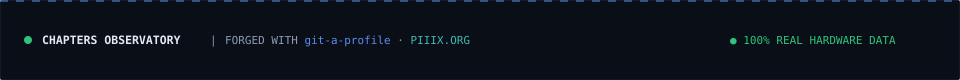
All charts and badges are now fully animated, and the competitor comparison matrix has been added! Inspect the live animations above in your browser.